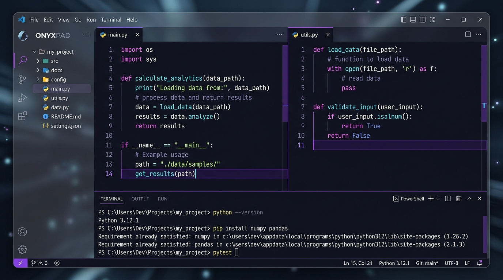

Dirancang untuk pengembang profesional yang membutuhkan kecepatan, navigasi keyboard tmux-style, rendering terminal ANSI langsung, serta perekam `.cast` v2 berbasis multithreading.

Seluruh kapabilitas aplikasi disajikan langsung secara lengkap tanpa perlu navigasi bertingkat.
Bagi layar tanpa batas ke arah horizontal (`Ctrl+\`) atau vertikal (`Ctrl+'`). Setiap pane mendukung tab mandiri, auto-save sesi, dan navigasi keyboard arah panah (`Alt+←↑→↓`).
# Pane 1: src/app.py
class OnyxPad(QMainWindow): ...# Pane 2: src/panes.py
class PaneManager: ...Terminal terintegrasi (`Ctrl+\``) dengan dukungan PowerShell/CMD/Bash, warna ANSI xterm-256, dan perekam `.cast` v2 (`Ctrl+Shift+R`) yang berjalan pada `QThread` terpisah tanpa mengganggu performa UI.
Klik file gambar (`.png`, `.jpg`, `.svg`) atau video (`.mp4`, `.webm`, `.avi`) pada Folder Tree untuk menampilkan preview visual & pemutaran media secara langsung di dalam tab editor.
Tambah kursor di kata berikutnya (`Ctrl+D`), sunting baris secara simultan, serta cari/ganti teks dengan Regex (`Ctrl+F`, `Ctrl+H`) secara fleksibel.
Setiap tema memiliki skema warna QSS tersendiri untuk menjamin keterbacaan teks dan kenyamanan mata pengembang.
def main():
app = OnyxPad()
app.set_theme("dracula")
app.show()def main():
app = OnyxPad()
app.set_theme("onedark")
app.show()def main():
app = OnyxPad()
app.set_theme("monokai")
app.show()def main():
app = OnyxPad()
app.set_theme("matrix")
app.show()def main():
app = OnyxPad()
app.set_theme("nord")
app.show()def main():
app = OnyxPad()
app.set_theme("solarized")
app.show()Seluruh kontrol navigasi dapat dieksekusi cepat tanpa menyentuh tetikus.